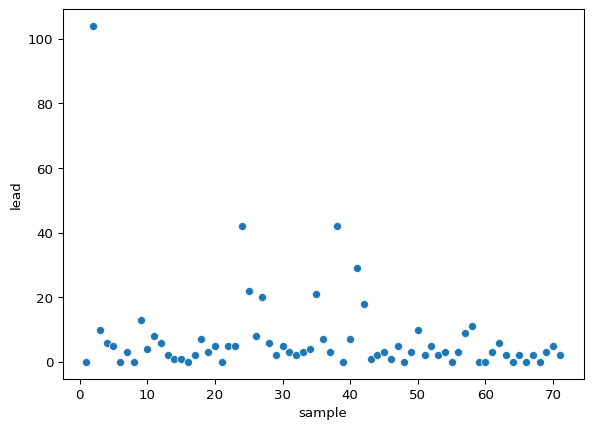
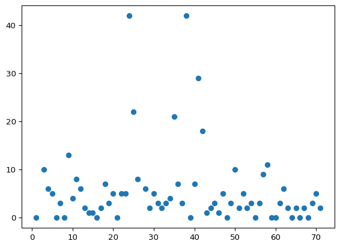
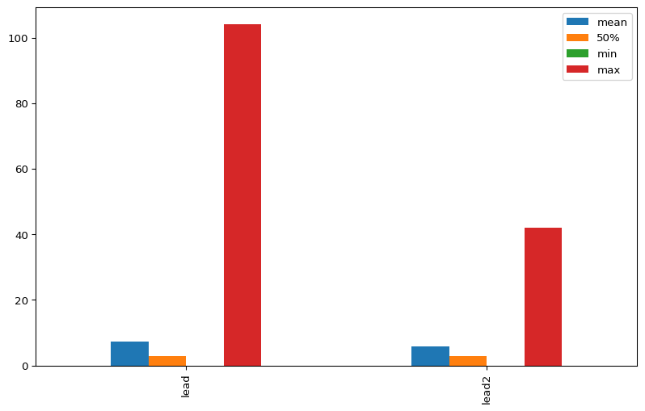
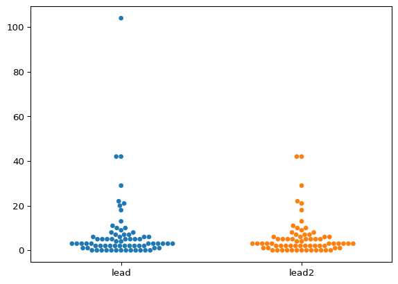
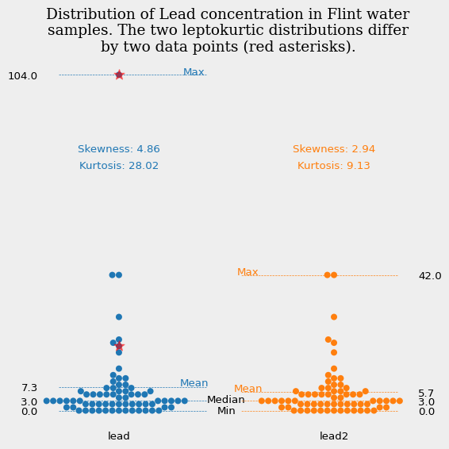
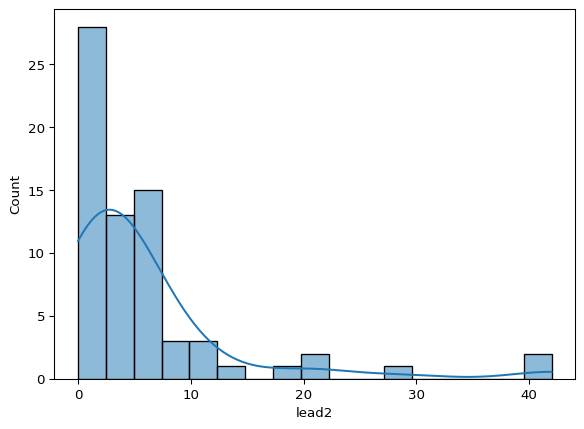

import pandas as pd
import matplotlib.pyplot as plt
from matplotlib.ticker import FuncFormatter
import seaborn as sns
from scipy.stats import skew, kurtosis
import textwrapflint_mdeq = pd.read_csv('https://raw.githubusercontent.com/rfordatascience/tidytuesday/main/data/2025/2025-11-04/flint_mdeq.csv')
flint_vt = pd.read_csv('https://raw.githubusercontent.com/rfordatascience/tidytuesday/main/data/2025/2025-11-04/flint_vt.csv')flint_mdeq| sample | lead | lead2 | notes | |
|---|---|---|---|---|
| 0 | 1 | 0 | 0.0 | NaN |
| 1 | 2 | 104 | NaN | sample removed: house had a filter |
| 2 | 3 | 10 | 10.0 | NaN |
| 3 | 4 | 6 | 6.0 | NaN |
| 4 | 5 | 5 | 5.0 | NaN |
| ... | ... | ... | ... | ... |
| 66 | 67 | 2 | 2.0 | NaN |
| 67 | 68 | 0 | 0.0 | NaN |
| 68 | 69 | 3 | 3.0 | NaN |
| 69 | 70 | 5 | 5.0 | NaN |
| 70 | 71 | 2 | 2.0 | NaN |
71 rows × 4 columns
sns.scatterplot(data=flint_mdeq, x='sample', y='lead')
plt.scatter(flint_mdeq['sample'],flint_mdeq['lead2'])
#plt.scatter(flint_vt['sample'],flint_vt['lead'])
flint_mdeq.describe()| sample | lead | lead2 | |
|---|---|---|---|
| count | 71.000000 | 71.000000 | 69.000000 |
| mean | 36.000000 | 7.309859 | 5.724638 |
| std | 20.639767 | 14.347316 | 8.336461 |
| min | 1.000000 | 0.000000 | 0.000000 |
| 25% | 18.500000 | 2.000000 | 2.000000 |
| 50% | 36.000000 | 3.000000 | 3.000000 |
| 75% | 53.500000 | 6.500000 | 6.000000 |
| max | 71.000000 | 104.000000 | 42.000000 |
desc = flint_mdeq[['lead','lead2']].describe().T[['mean','50%', 'min','max']]
desc| mean | 50% | min | max | |
|---|---|---|---|---|
| lead | 7.309859 | 3.0 | 0.0 | 104.0 |
| lead2 | 5.724638 | 3.0 | 0.0 | 42.0 |
desc.plot(kind='bar', figsize=(10,6))
sns.swarmplot(flint_mdeq[['lead','lead2']])
flint_mdeq| sample | lead | lead2 | notes | |
|---|---|---|---|---|
| 0 | 1 | 0 | 0.0 | NaN |
| 1 | 2 | 104 | NaN | sample removed: house had a filter |
| 2 | 3 | 10 | 10.0 | NaN |
| 3 | 4 | 6 | 6.0 | NaN |
| 4 | 5 | 5 | 5.0 | NaN |
| ... | ... | ... | ... | ... |
| 66 | 67 | 2 | 2.0 | NaN |
| 67 | 68 | 0 | 0.0 | NaN |
| 68 | 69 | 3 | 3.0 | NaN |
| 69 | 70 | 5 | 5.0 | NaN |
| 70 | 71 | 2 | 2.0 | NaN |
71 rows × 4 columns
flint_mdeq['diff'] = flint_mdeq.apply(
lambda row: row['lead'] if pd.isna(row['lead2']) else None,
axis=1
)d = flint_mdeq['lead2'].dropna()
print("Skewness:", skew(d))
print("Kurtosis:", kurtosis(d))Skewness: 2.9376969574953016
Kurtosis: 9.133276189367894melted = flint_mdeq[['lead', 'lead2','diff']].melt(var_name='Source', value_name='Lead Level')
fig,ax=plt.subplots(figsize=(6, 6))
ax2 = ax.twinx()
sns.swarmplot(x='Source', y='Lead Level', data=melted[melted['Source'].isin(['lead', 'lead2'])], size=6, hue='Source')
temp = melted[melted['Source']=='diff']
temp['Source'] = temp['Source'].str.replace('diff','lead')
plt.scatter(temp['Source'], temp['Lead Level'],marker='*', color='red',s=100,zorder=10, alpha=0.5)
desc.plot(ax=ax, alpha=0, legend=False)
ax.set_yticks(desc.loc['lead'])
ax2.set_yticks(desc.loc['lead2'])
#ax.grid(True, axis='y', color='#1f77b4')
yticks = ax.get_yticks()
# Get x-axis limits
xlim = ax.get_xlim()
x_half = (xlim[0] + xlim[1]) / 2 # midpoint of x-axis
# Draw custom horizontal lines from left to midpoint
for ytick in yticks:
ax.hlines(y=ytick, xmin=xlim[0], xmax=x_half-0.1, color='#1f77b4', linestyle='--', linewidth=0.5)
#ax2.grid(True, axis='y', color='#ff7f0e')
yticks = ax2.get_yticks()
# Get x-axis limits
xlim = ax2.get_xlim()
x_half = (xlim[0] + xlim[1]) / 2 # midpoint of x-axis
# Draw custom horizontal lines from left to midpoint
for ytick in yticks:
ax2.hlines(y=ytick, xmin=xlim[1], xmax=x_half+0.1, color='#ff7f0e', linestyle='--', linewidth=0.5)
ax.tick_params(axis='both', which='both', length=0)
ax2.tick_params(axis='both', which='both', length=0)
formatter = FuncFormatter(lambda val, pos: f'{val:.1f}')
ax2.yaxis.set_major_formatter(formatter)
ax.text(0.5, -1, 'Min',ha='center')
ax.text(0.5, 2.5, 'Median',ha='center')
ax.text(0.35, 7.5, 'Mean',ha='center', color='#1f77b4')
ax.text(0.6, 6, 'Mean',ha='center', color='#ff7f0e')
ax.text(0.35, 104, 'Max',ha='center', color='#1f77b4')
ax.text(0.6, 42, 'Max',ha='center', color='#ff7f0e')
ax.text(0,80,f'Skewness: {round(skew(flint_mdeq["lead"]),2)}', ha='center', color='#1f77b4')
ax.text(0,75,f'Kurtosis: {round(kurtosis(flint_mdeq["lead"]),2)}', ha='center', color='#1f77b4')
ax.text(1,80,f'Skewness: {round(skew(flint_mdeq["lead2"].dropna()),2)}', ha='center', color='#ff7f0e')
ax.text(1,75,f'Kurtosis: {round(kurtosis(flint_mdeq["lead2"].dropna()),2)}', ha='center', color='#ff7f0e')
plt.ylabel('')
sns.despine(left=True,bottom=True)
title="Distribution of Lead concentration in Flint water samples. The two leptokurtic distributions differ by two data points (red asterisks)."
plt.title('\n'.join(textwrap.wrap(title,50)), fontfamily='Serif', fontsize=14)
ax.set_facecolor('#EEEEEE')
fig.set_facecolor('#EEEEEE')
plt.tight_layout()
plt.savefig('Flint_water.png', dpi=300, bbox_inches='tight')
plt.show()
sns.histplot(flint_mdeq['lead2'], kde=True)
plt.show()